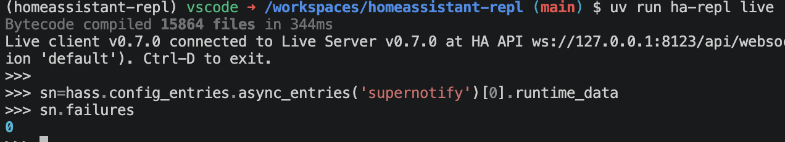

Live Mode¶
Live mode is the most powerful, flexible and dangerous way to play around with Home Assistant. Use it with a devcontainer Home Assistant or development instance unless you really know what you're doing, and even then ...
Installation¶
Install via HACS:
- it's not in the default HACS repository, so you'll have to add
https://github.com/rhizomatics/homeassistant-replas a Custom Repository from the top-right dot menu first - Search for Home Assistant REPL in the HACS menu and choose Download
- Restart Home Assistant for it to recognize the new custom component available
- From Settings → Devices & services → Add integration find Home Assistant REPL Server in the list and install, there's no further config needed
- The component will quiz you first to make sure you know what you're doing
- Alternatively add
ha_repl_server:toconfiguration.yaml, which is imported as a config entry)
Using the Live REPL¶

Run ha-repl with the live argument
The quickest way to run the shell is using uv, which you can do without cloning this repo or making any other downloads.
Once you're in, hass gives you direct access to the running instance of the HomeAssistant class, from which everything else is accessible, its the ultimate god object for the platform.
Also, sql gives you query access to the primary HomeAssistant database.
Get help on the arguments in the usual way.
hass and sql can get combined like this, note the separate rows, the two 'magic' variables can't be combined yet into a single statement.
>>> r = sql("select entity_id from states_meta", max_rows=3)
{row[0]: hass.states.get(row[0]).state for row in r}
What Runs Where¶
The live shell is an ordinary Python session on your own machine. Import whatever you have installed, define functions, keep dataframes around - none of that touches Home Assistant.
| Name | Where it lives |
|---|---|
sql |
Local. Sends the query to Home Assistant, downloads the result as Arrow data, and gives you a local result object - see SQL Access |
hass_api |
Local. A REST API client |
hass, obj |
Inside Home Assistant |
Since hass and obj only exist inside Home Assistant, any statement that uses one of them is sent there and run there, with its output sent back as text. A variable assigned by such a statement stays there too, and later statements that use it follow it:
>>> import polars as pl # local
>>> df = sql("select * from states").to_polars() # local, on downloaded data
>>> s = hass.states.get("sun.sun") # runs inside Home Assistant
>>> s.state # so does this - `s` lives there
'below_horizon'
Local values can be used in a statement that runs inside Home Assistant when they are plain data (strings, numbers, and lists or dicts of them) - they are copied over first. Modules you imported locally are imported there under the same name. Anything else local, such as a dataframe or a function, can't cross; the shell says so rather than running the statement. Nothing is copied back the other way.
A sql result is the one exception: it crosses as its rows (a list of lists), so you can loop over one to call into hass:
>>> r = sql("select entity_id from states_meta")
>>> {row[0]: hass.states.get(row[0]).state for row in r}
Warning
Assign the result first, as above. sql itself doesn't exist inside Home Assistant, so one statement that both calls sql(...) and uses hass or obj fails there with a NameError. Only the rows cross, not the result's methods, and only up to about 100,000 characters of data - trim a large result first with project() or a slice.
>>> eid = "sun.sun" # local
>>> hass.states.get(eid).state # `eid` is copied over first
'below_horizon'
A variable lives wherever it was last assigned. The decision is made per statement, so several lines pasted or run together can mix both sides.
One-Shot Snippets and Agents¶
ha-repl exec runs a snippet exactly as the live shell would, then exits - see Exec Mode, which covers its JSON output and use by coding agents.
Running from a clone/fork of this repo¶
If you do have this repo checked out, you can also use a direct run which means you can also tinker locally with homeassistant_repl code.
Install Local Home Assistant with the Live Server¶
The homeassistant-repl repo has a DevContainer defined, and helper scripts in the /dev directory to manage it.
Dev instance (devcontainer, or directly on a host with Python 3.14):
dev/setup.sh # installs HA into its own venv + the CLI (devcontainer runs this)
dev/restart-ha.sh # Kill current HA instance and start a new
dev/run-ha.sh # HA on :8123 with custom_components/ha_repl_server symlinked in
uv run python dev/bootstrap.py # onboard (user dev/dev) and write dev/.env with a token
Using it (host or container):